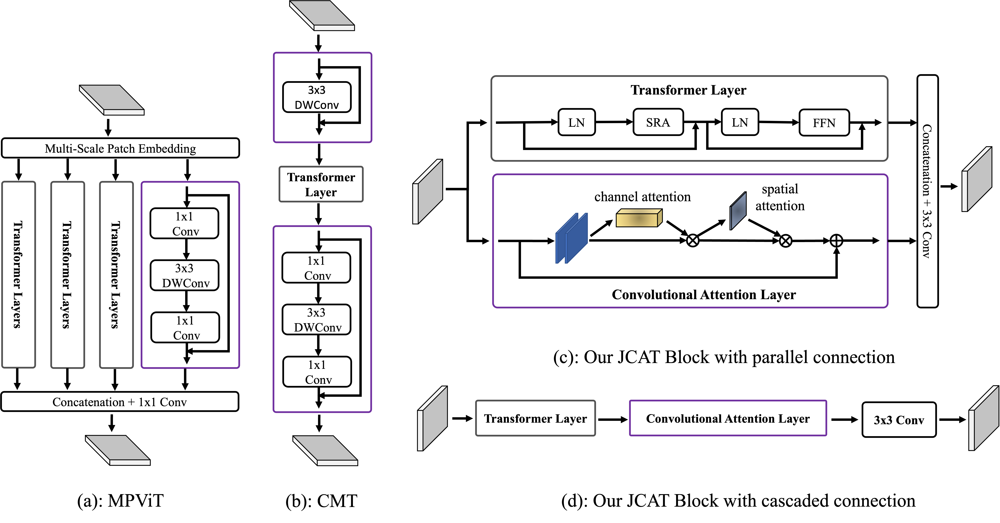
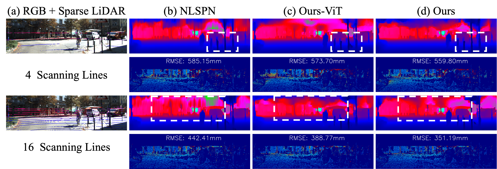
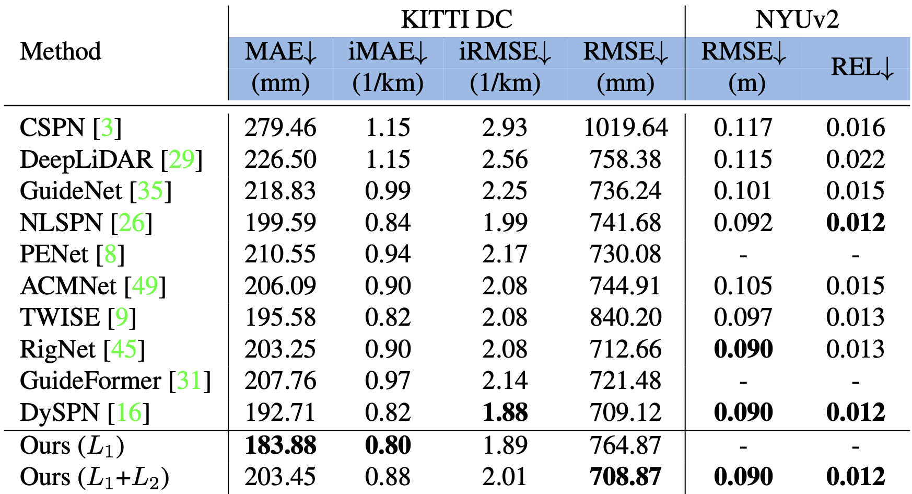

Key Idea

Example of architecture with convolutions and Vision Transformer. (a) Multi-Path Transformer Block of MPViT. (b) CMT Block of CMT-S. (c) Our proposed JCAT block which contains two parallel streams, i.e., convolutional attention and Transformer layer respectively. (d) The variant of our proposed block with cascaded connection.
Visualization

Qualitative results on KITTI DC selected validation dataset with 4 and 16 LiDAR scanning lines. We attach the subsampled LiDAR lines to the corresponding RGB image for better visualization. Ours-ViT denotes that only the Transformer layer is enabled in our proposed block. A colder color in depth and error maps denotes a lower value.

Qualitative results on NYUv2 dataset. Comparisons of our method against state-of-the-art method, i.e., NLSPN are presented. We provide RGB images, and dense predictions. The colder the colors of the error map, the lower the errors. Ours-ViT denotes that only the Transformer layer is enabled in our proposed block.
Results on KITTI DC and NYUv2
